Горная Шория . Шерегеш-2007
Белая Снежная Радость
13.12.2007 - Все просто замечательно! Снег, которого
в Шерегеше ждали недели 2-3, свалился на нашу голову в последние два
дня катания. И мы катались, и по трассам, и по лесу. Мерзли в креслах
подъемников и боролись с ветром на вершине горы. Катали лесной фрирайд
под предводительством ангарских партизан и вытрапливали к подъемнику
после спуска. С каждым разом точность попадания к кассе увеличивалась,
разведка местности на отдельно взятом участке возле трассы 1А была успешной
:) А сколько же еще таких участков?! Катать - не перекатать!
Участники катухи - Нестер, Саня, Вова, Гриша, Света и я.
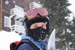
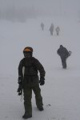
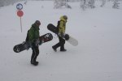
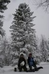
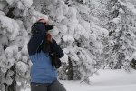
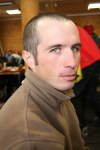
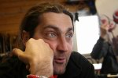
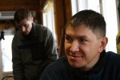
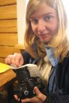
Очередь на кресельно-гондольный подъемник "SkiWay"
в эти ветренные дни была в основном на гондолки. И только шесть байкальских
фрирайдеров презирали перелести буржуйской застекленной цивилизации
и гордо мерзли на 6-тиместной креселке, поплевывая на проезжавших внизу
лыжников :) Начальники канатной дороги даже снизили скорость, чтобы
продлить удовольствие от висячего путешествия на ветру. Ну да что нам
это, нам - воспитанным мамайской тропежкой :)
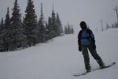
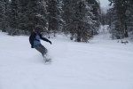
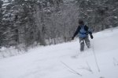
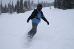
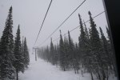
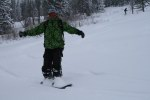
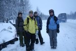
Прелестями цивилизации можно было хоть целый день наслаждаться
в кафе "Трамплин" - тепло, весело, цены как в ресторане, но
одноразовое питание можно позволить. Один раз в неделю :) Самое зачетное
- кружечка горячего шоколада после подъемника! Вот на этом можно не
экономить :) Кстати, в столь прелестное заведение можно проносить свой
термос с чаем, еду, горячительные напитки и доски с лыжами, а это клево
:)
Заключительный спуск сделали опять же за ангарчанами,
у них технология отработанная :) Стартанули где-то в "Секторе Е"
с трассы 1А, куда-то в сторону объездной дороги, по лесу и по полянам.
В общем-то зачетно, только местами приходилось коллективно пробивать
бордическую дорожку и коллективно потерять Нестера :) Але, гараж! и
вот мы уже в микрике опять едем в "номера". Вечером смотрим
"Трансформеров" и пьем пиво...
14.12.2007 - А снег идет, а снег идет! Фрирайд уже можно
было не искать в лесу - его хватало и на трассах и около них! На вершинах
по прежнему дует ветер, в кафе "Трамплин" по прежнему горячий
шоколад :) Есть кого фотографировать и есть кому фотографировать. Сегодня
катались везде помаленьку и все по всякому. Несколько раз собирались
в компании и гоняли по лесу, там же где и вчера, и по новым местам тоже.
Да, там же где и вчера падали в одну и ту же канаву, в ней все по очереди
побывали :) Еще один забавный момент - едем со всей дури по лесу, вдруг
попадаются кусты, который с разбегу доской не перерубишь и их много,
так вот повиснешь на одном таком, смотришь, а твои друзья-товарищи на
соседних уже висят в полный рост :) Много было забавного, есть что вспомнить.
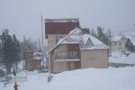
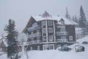
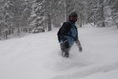
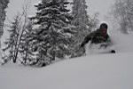
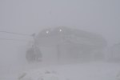
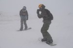
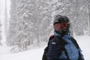
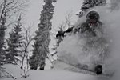
Но Янь без Инь не ходит. Где-то с пухляка можно вылететь на задутую трассу и так шмякнуться затылком, что в глазах темнеет и только звезды летают. Еще на трассе 1А надуло ветром сугроб высотой пару метров с одного бока, так вот на этот бок можно очень неудачно заехать в плохой видимости и пролетев несколько метров опять приложиться затылком. Короче говоря, автору этих строк шлем не раз служил прокладкой между буйной головой и твердым склоном :) Да и в мягком пушистом снежке можно найти неприятности, с нашим экстримальным увлечением от этого никто не застрахован. "Бандитская пуля", в виде какой-то острой хреновины, пробила все три слоя высокотехнологичной сноубордической одежды и проткнула нежную женскую кожу голубоглазой райдерши Светки. С подозрением на перелом руки крепкая девушка добралась до медпункта, где ее подозрения слегка развеяли. А вот подозрительные друзья все-таки хотели ее заслать в рентген, но получив в ответ решительное "Ну его нафиг!", просто наложили гипс :)
В общем, неделя катания без приключений не обошлась, Антон еще ребро сломал. Ребята с 3-го этажа сходили в ночной клуб "Куба", где Вова оторвался за всех сразу, уйдя в загул на пару дней :)
15.12.2007 - Субботнее утро, утро расставания с Шерегешем. Кто-то в это утро залечивал боевые ранения, кто-то похмелялся, кто-то похмелял, а кто-то еще завтракал в трусах. Под окнами "пентагона" уже стояли две маршрутки, а на утренних трассах вечно молодой Нестер ловил кайф на пухляке. Едем в Новокузнецк, где всех ждет зеленый поезд и беспечное веселье до Иркутска. К сожалению, я как приехал один, так и уезжаю сам по себе, а точнее пока еще остаюсь... Отпуск, родственники... А так хотелось поехать вместе со всеми, или еще лучше - остаться в Шерегеше...
Эх, Шерегеш, Шерегеш! Белоснежная радость :) надеюсь, мы с тобой еще увидимся :)
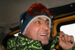
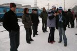
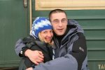
Декабрь 2007
Фото Алексей Б., Светлана К.
Начало здесь ...